| Variable | Type | Response/Explanatory | Number of Levels |
|---|---|---|---|
| IsCanceled | numeric | Response | NA |
| LeadTime | numeric | Explanatory | NA |
| ArrivalDateWeekNumber | numeric | Explanatory | NA |
| StaysInWeekendNights | numeric | Explanatory | NA |
| StaysInWeekNights | numeric | Explanatory | NA |
| Adults | numeric | Explanatory | NA |
| Children | numeric | Explanatory | NA |
| Meal | character | Explanatory | 5 |
| DistributionChannel | character | Explanatory | 3 |
| IsRepeatedGuest | numeric | Explanatory | NA |
| PreviousCancellations | numeric | Explanatory | NA |
| PreviousBookingsNotCanceled | numeric | Explanatory | NA |
| BookingChanges | numeric | Explanatory | NA |
| DepositType | character | Explanatory | 3 |
| DaysInWaitingList | numeric | Explanatory | NA |
| CustomerType | character | Explanatory | 4 |
| ADR | numeric | Explanatory | NA |
| RequiredCarParkingSpaces | numeric | Explanatory | NA |
| TotalOfSpecialRequests | numeric | Explanatory | NA |
| ReservationStatus | character | Explanatory | 3 |
| RoomChange | numeric | Explanatory | NA |
Final Project - Group B_1_2
Background Data
The hotel dataset was created using data from the hotels’ Property Management System in Portugal. It contains detailed information about hotel reservations, including cancellations, booking dates, the time between booking and arrival, special requests, and more. While this dataset offers numerous opportunities for modeling, our focus is on identifying factors associated with cancellations and predicting when guests are likely to cancel their bookings.
Cleaning Steps
We performed several data cleaning steps to improve our models and analysis. For example, we combined the “babies” and “children” columns into a single “children” column and created a “RoomChange” dummy variable to indicate where the requested room differed from the assigned room. We removed variables such as MarketSegment, ArrivalDateYear, ArrivalDateMonth, and ArrivalDateDayOfMonth because their information could be derived from other columns. Similarly, we excluded Country, Agent, and Company due to the large number of specific levels that would not contribute meaningfully to the models. Lastly, we removed columns that contained a lot of missing values.
Question: Can we predict whether a reservation will be cancelled based on booking and guest characteristics?
To answer our question, we are using a variable called IsCancelled that is a dummy variable with a value of 0 for not-cancelled bookings and 1 for cancelled bookings. This is our response, and all other variables will be used as explanatory variables.
| Variable | Min | Max | Unique Values |
|---|---|---|---|
| Meal | 2 | 9 | 5 |
| DistributionChannel | 5 | 9 | 3 |
| DepositType | 10 | 10 | 3 |
| CustomerType | 5 | 15 | 4 |
| ReservationStatus | 7 | 9 | 3 |
| Variable | Mean | SD | Min | Max |
|---|---|---|---|---|
| IsCanceled | 0.28 | 0.45 | 0.00 | 1 |
| LeadTime | 92.68 | 97.29 | 0.00 | 737 |
| ArrivalDateWeekNumber | 27.14 | 14.01 | 1.00 | 53 |
| StaysInWeekendNights | 1.19 | 1.15 | 0.00 | 19 |
| StaysInWeekNights | 3.13 | 2.46 | 0.00 | 50 |
| Adults | 1.87 | 0.70 | 0.00 | 55 |
| Children | 0.14 | 0.46 | 0.00 | 10 |
| IsRepeatedGuest | 0.04 | 0.21 | 0.00 | 1 |
| PreviousCancellations | 0.10 | 1.34 | 0.00 | 26 |
| PreviousBookingsNotCanceled | 0.15 | 1.00 | 0.00 | 30 |
| BookingChanges | 0.29 | 0.73 | 0.00 | 17 |
| DaysInWaitingList | 0.53 | 7.43 | 0.00 | 185 |
| ADR | 94.95 | 61.44 | -6.38 | 508 |
| RequiredCarParkingSpaces | 0.14 | 0.35 | 0.00 | 8 |
| TotalOfSpecialRequests | 0.62 | 0.81 | 0.00 | 5 |
| RoomChange | 0.19 | 0.39 | 0.00 | 1 |
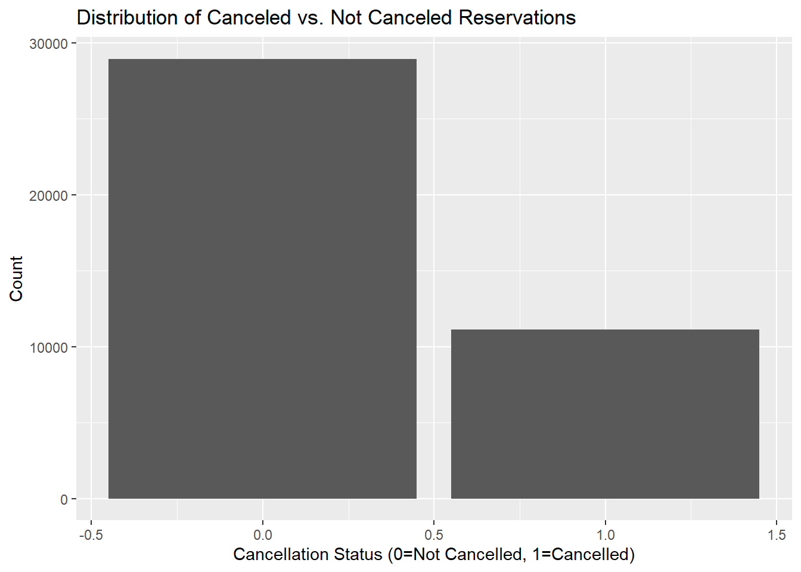
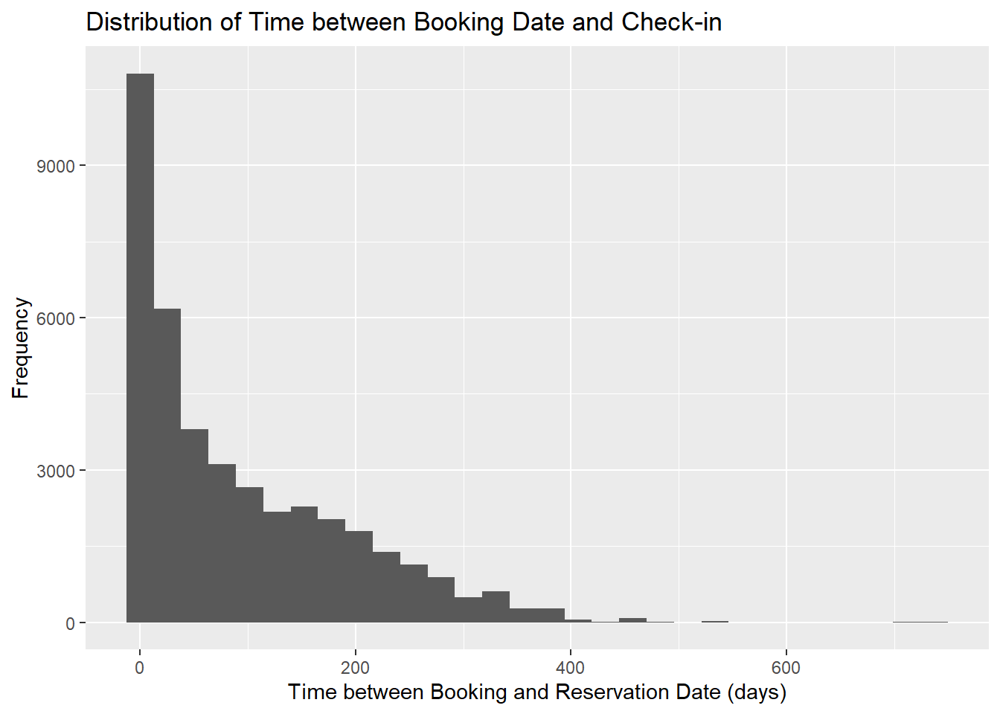
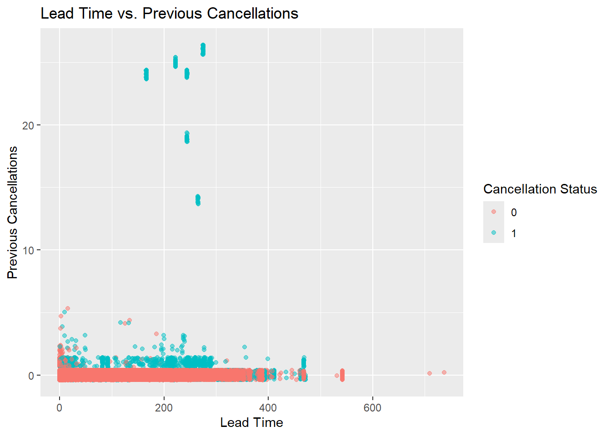
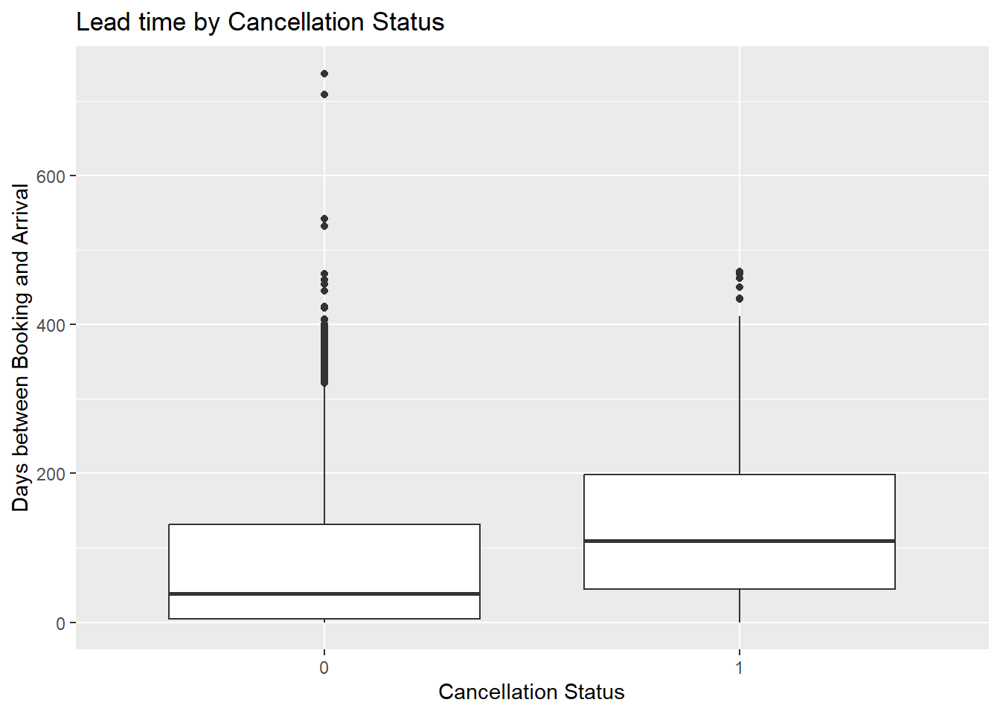
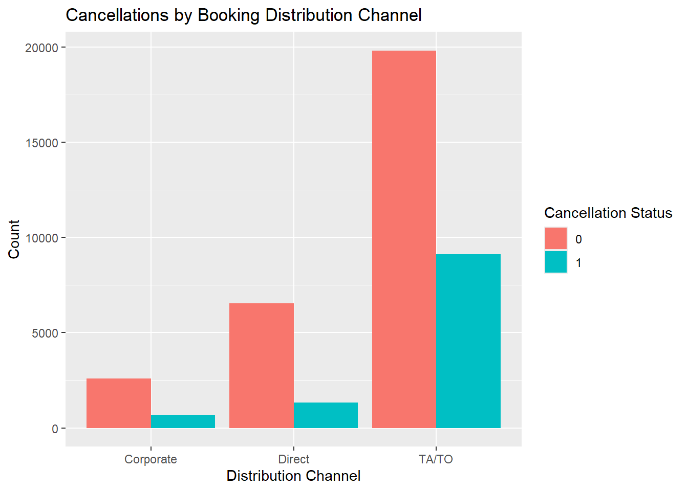
Lasso Model
We decided to use a lasso model and optimize the penalty to find the best predictors of booking cancellations. We made our training and testing datasets and set up a lasso model with the penalty tuned. We then used cross-validation to find the optimal lambda and added that into our workflow and fit. Our original model contained a variable (reservation status), that had an already known relationship with our response because it said whether the reservations were cancelled or not, so we excluded it from our recipe to fit a better model. We chose to optimize with the roc_auc metric, and used 10 fold cross validation. Because of the extremely skewed nature of our dataset, we chose to find the penalty where specificity and sensitivity were closest to equal. If the hotel predicts too many cancellations that don’t actually happen (false positives), they might double book rooms to compensate. This could lead to the hotel being overfilled and not having enough rooms for all guests. On the other hand, if the hotel fails to predict cancellations (false negatives), they could end up with empty rooms that go unused, losing money as a result. Finding where these are closest to equal can balance those out, helping the hotel combat any issues. We used step_smote in our recipe, which handles class imbalance by generating new examples of the minority class through nearest neighbors. This helped the model equally consider non-cancellations and cancellations, and resulted in a 73.2% model accuracy.
| .metric | .estimator | .estimate |
|---|---|---|
| accuracy | binary | 0.7315277 |
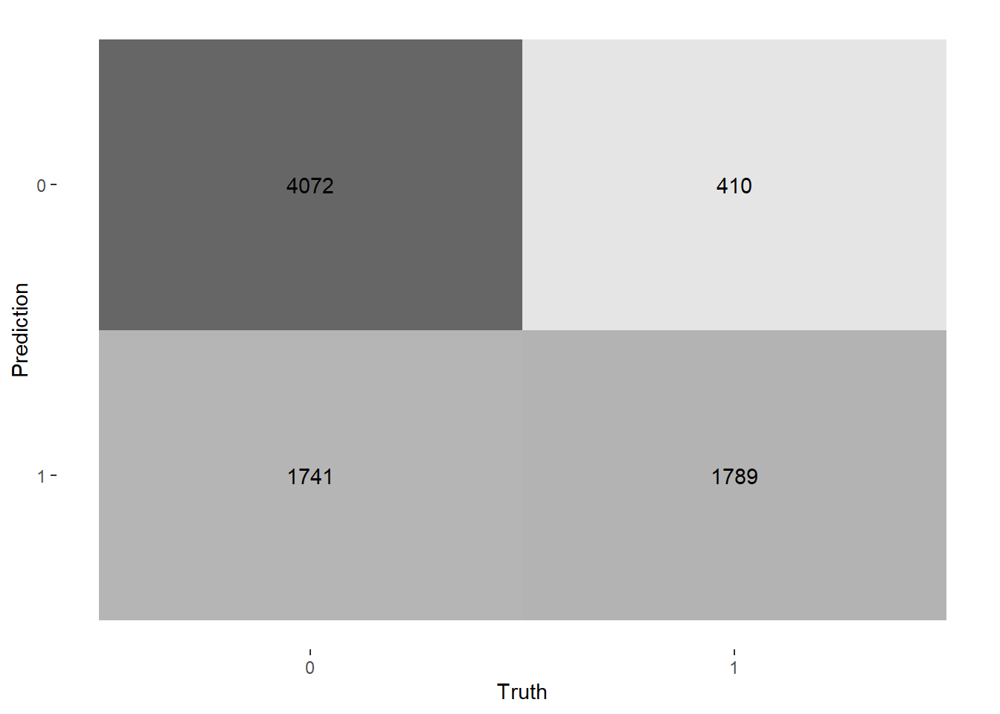
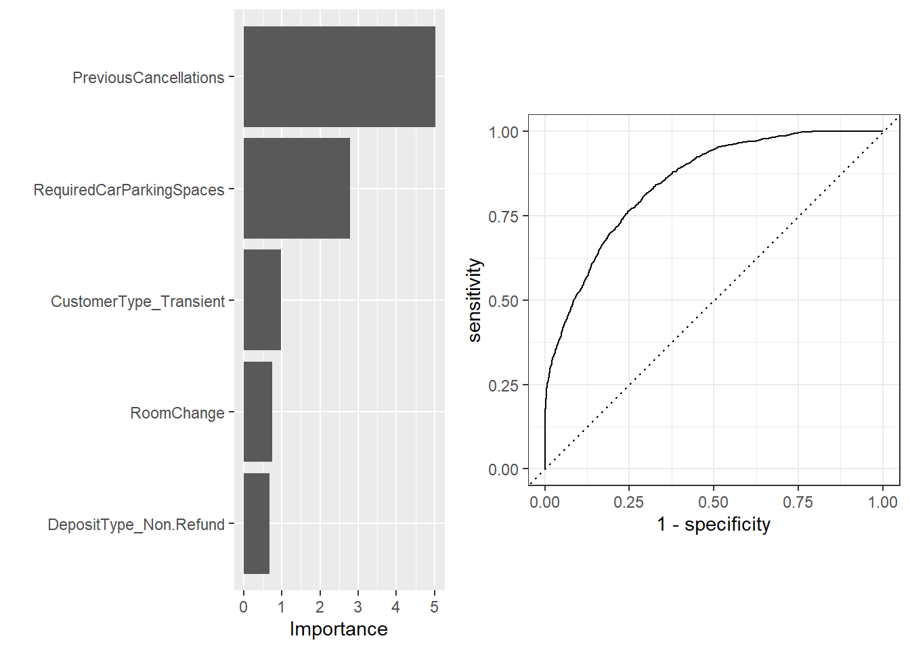
Tree Model
For this model, we built a tree and optimized it using bootstrapping, resulting in a final tree with a depth of 15. We used the same recipe as before to ensure that the skewed dataset was being accounted for. This yields about an 78.6% accuracy rate, which is quite a bit better than our lasso model. We chose to optimize using roc_auc because of the imbalanced nature of our dataset, as this metric takes into account both false positives and false negatives.
| .metric | .estimator | .estimate |
|---|---|---|
| accuracy | binary | 0.7855716 |
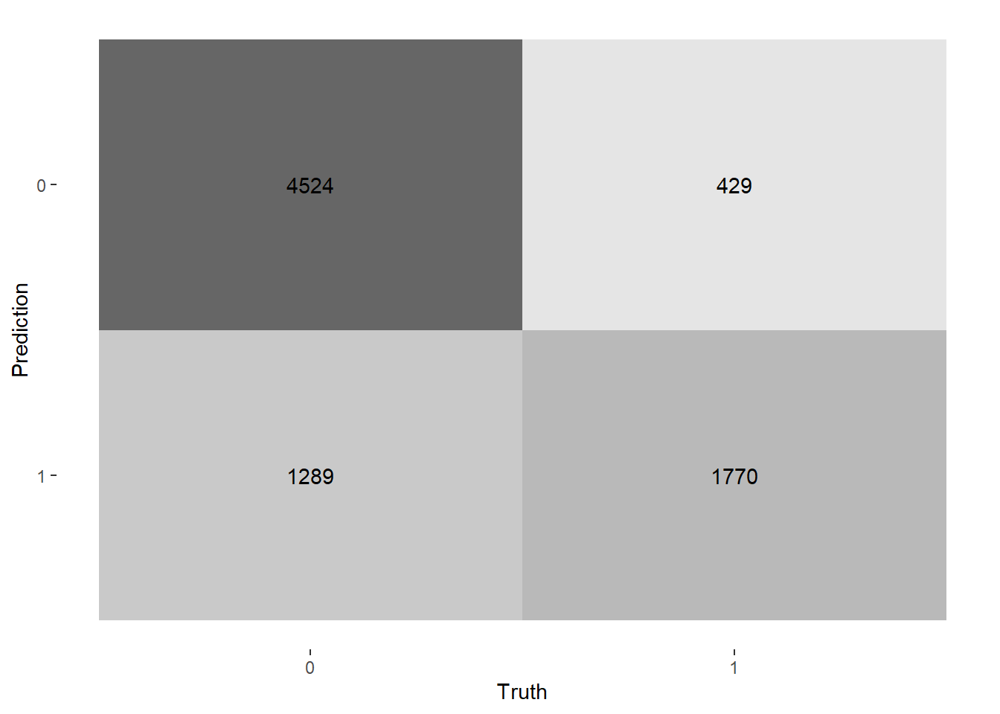
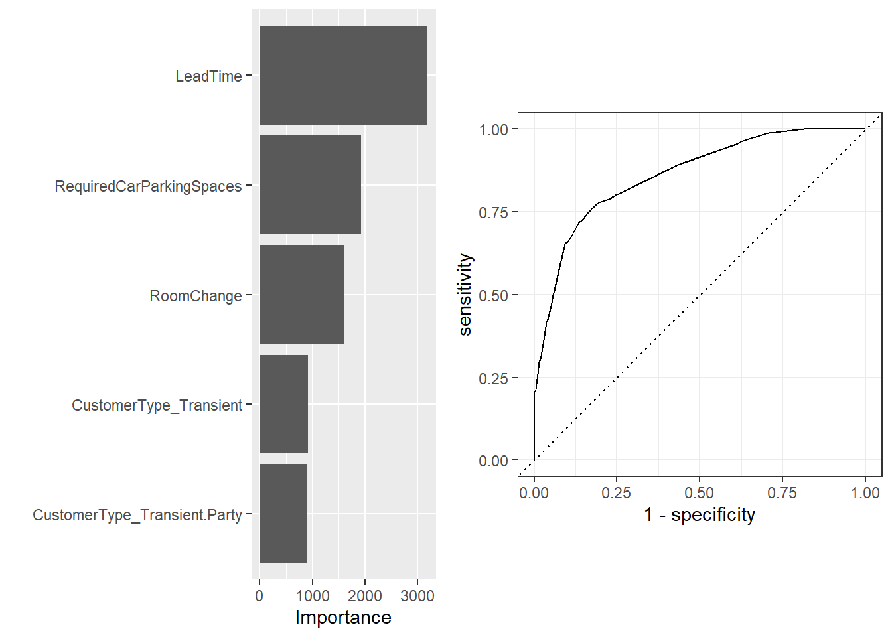
Forests
Our last model was a random forest, which uses multiple decision trees to optimize accuracy and prevent overfitting.
| .metric | .estimator | .estimate |
|---|---|---|
| accuracy | binary | 0.847978 |
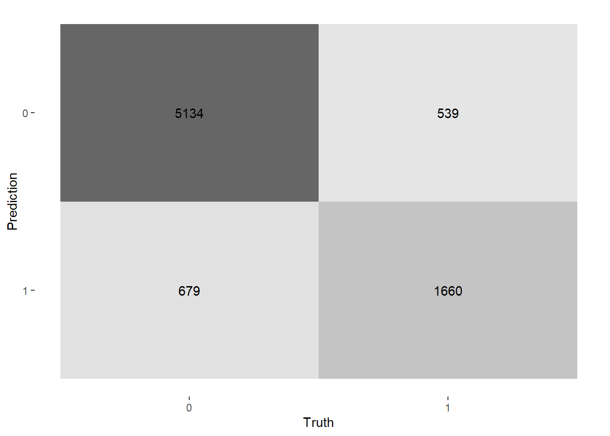
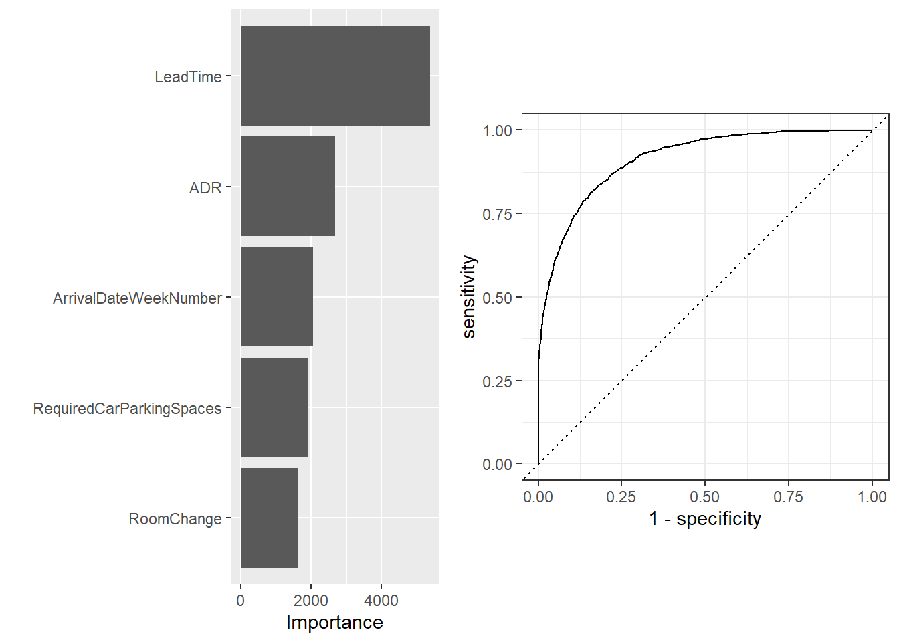
Conclusion
In conclusion, we found that we can predict with about 86% accuracy whether or not someone will cancel their hotel reservation based on customer characteristics and booking history. Figures summarizing the fit of each of the models and their variable importance are provided and described appropriately above. Some limitations to our finding are that all of our data is from Portugal, meaning that these trends may not be prevalent to other hotels around the world and our scope is limited. Many of our variables are also not normally distributed and are highly skewed, which can affect our models. We did try to combat this, but it is still important to keep in mind.
We hope that this modeling could be useful to hotels. Although it is currently limited to select hotels in Portugal, further research could help expand the scope. Ideally, these models could be very helpful for hotels around the world in predicting cancellations based on consumer and reservation characteristics.